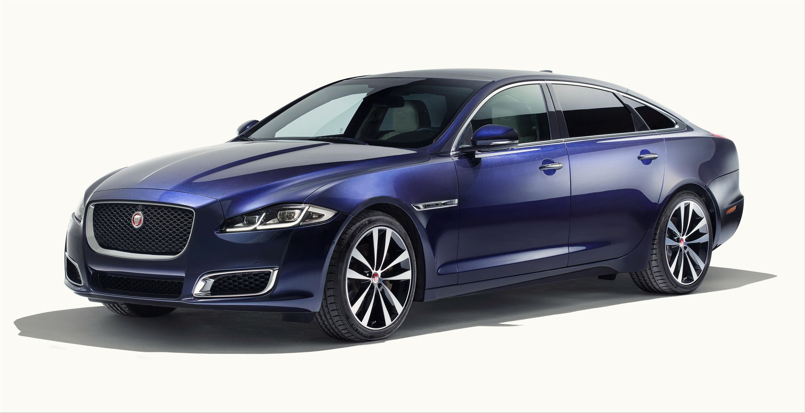
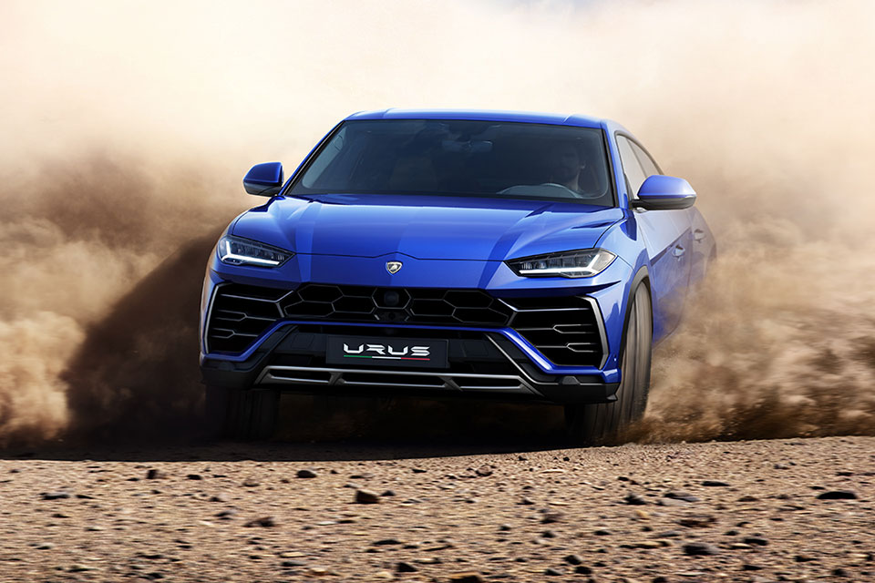
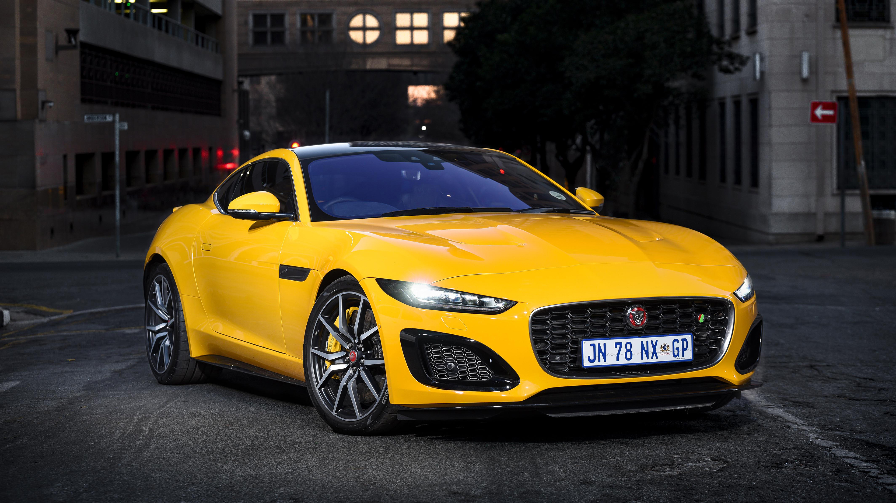
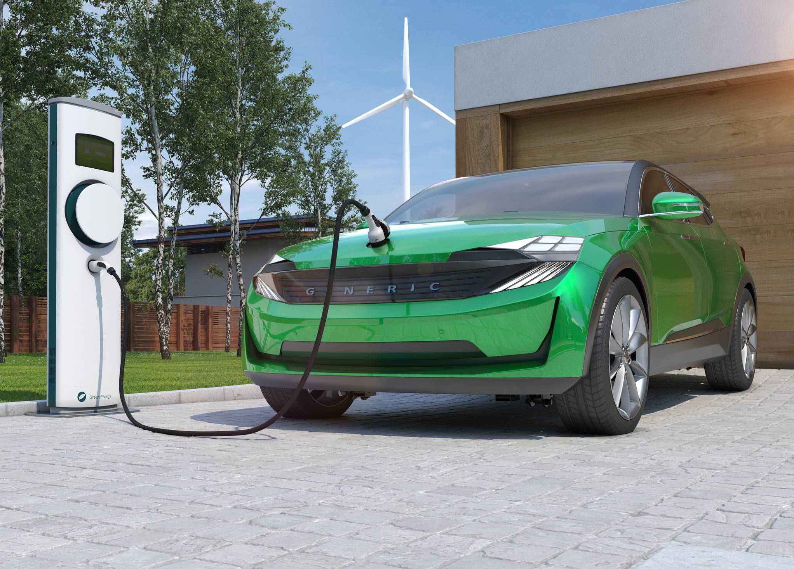
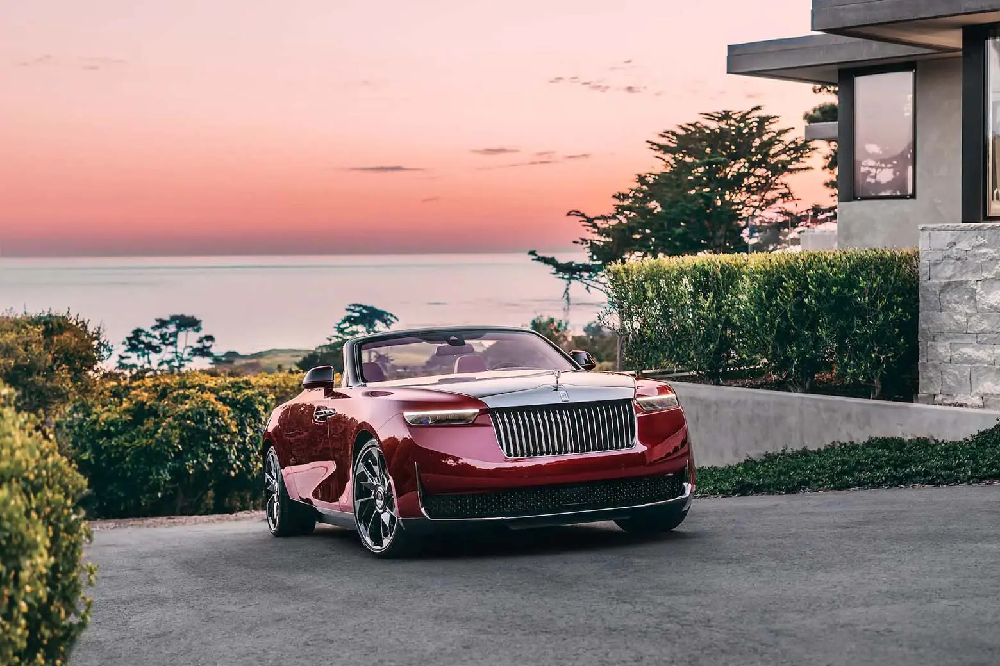
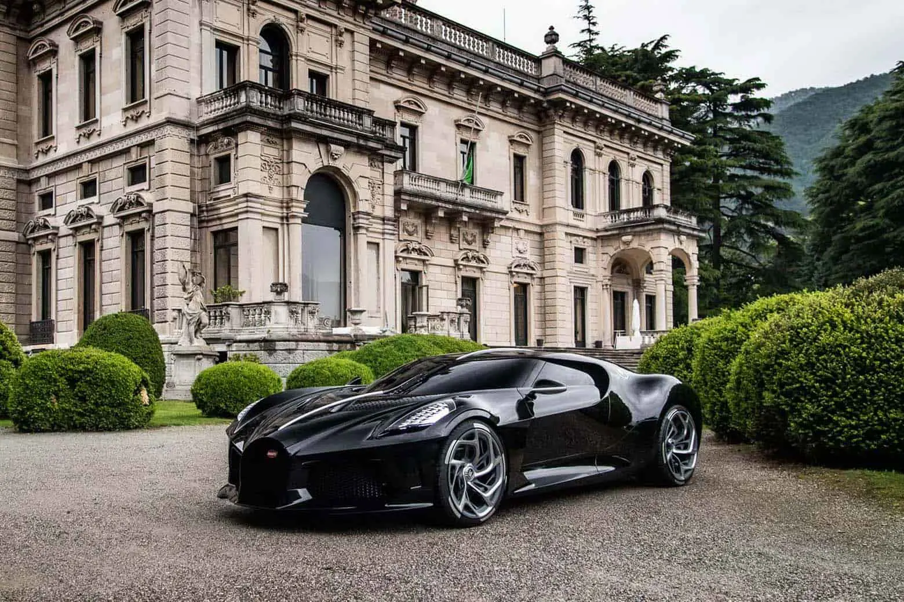
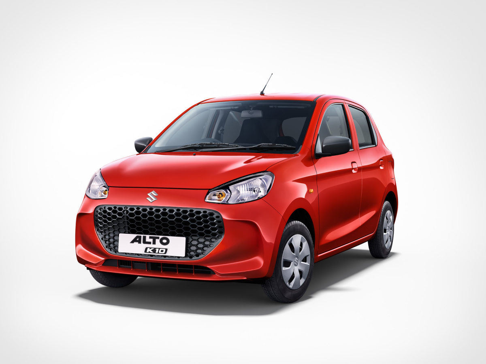
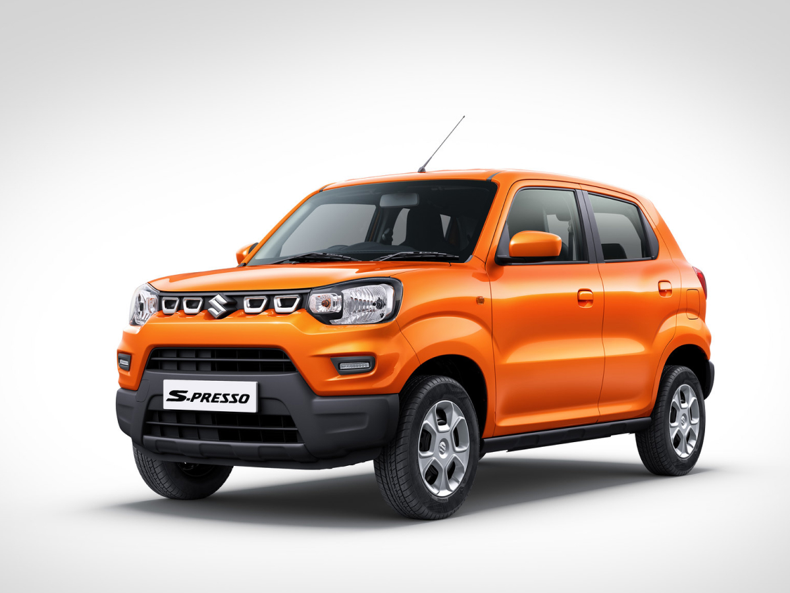

INTRODUCTION
A car, or an automobile, is a motor vehicle with wheels. Most definitions of cars state that they run primarily on roads,
seat one to eight people, have four wheels, and mainly transport people rather than cargo. There are around one
billion cars in use worldwide.
TYPES OF CARS
| S.no | TYPE | IMAGE | DESCRIPTION | MODELS |
|---|---|---|---|---|
| 1. | Hatchback |
 |
Compact car with a rear door that swings upward | |
| 2. | Sedan |  | Car with separate compartments for engine, passenger, and luggage | |
| 3. | SUV |  | Sport Utility Vehicle, larger and more powerful, often with 4-wheel drive | |
| 4. | Coupe |  | Two-door sporty car, usually with a sleek design | |
| 5. | Electric Car (EV) |  | Runs entirely on electric power with no emissions |
1.Rolls-Royce La Rose Noire Droptail: $30 million 2. Rolls-Royce Boat Tail: $28 million 3. Bugatti La Voiture Noire: $18.7 million

Budget Friendly Cars in India
1. Maruti Suzuki Alto K10 | Starting MSRP: ₹3.9 lakh
Maruti Suzuki Alto, now sold only in the K10 avatar. Thanks to its combination of
practicality,efficiency, and affordability, the Indian carmaker has had an unprecedented
run of success with this little hatchback. Priced between ₹3.9-5.9 lakh (ex-showroom),
the Maruti Suzuki Alto K10 tops the list of the most cost effective cars in India
2. Maruti Suzuki S-Presso | Starting MSRP: ₹4.2 lakh
The Maruti Suzuki S-Presso may not be the best-looking vehicle on sale today, but that shouldn’t
take the spotlight away from its strengths as a competent, comfortable, and compact city runabout,
alongside it being one of the best low cost cars in India. Factor in the low starting price of
₹4.2 lakh, and ₹6.1 lakh for the top model, the S-Presso starts making a lot of sense.
Car Audio
Car Video